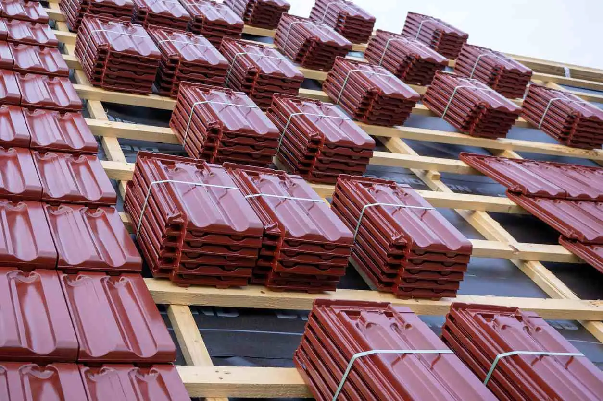

When constructing a new office building, you have several factors to consider before choosing which commercial roof type works best for you. You want to be sure your roof will provide the maximum amount of protection when the weather gets rough, and some roof styles may not deliver. Learn more about the different commercial roofing products and types available before committing to a design you might regret down the road.
What Are the Different Types of Commercial Roofs?
Typically, when looking at different commercial roof types, you will see flat roofs, low-sloped roofs, and pitched roofs. From there, you will choose the materials, such as metal roofing, green roofing, or asphalt shingles. Each commercial roofing style and product will have its advantages and disadvantages—often depending on your local climate—as well as durability, energy efficiency, and cost.
Flat Roof
This type of roof is great if you want to use all the available space beneath the roof, as well as utilize the space for solar panels and energy efficiency. Flat roofs are easier to maintain and are typically cheaper and faster to install, since fewer materials are needed to cover the space. They are also the preferred option if you live in a windy climate.
Despite the name, a flat roof does have a minimal slope to prevent water from pooling, but drainage is not as effective as on a sloped or pitched roof.
Low-Sloped Roof
Low-sloped roofs are a popular choice for commercial and industrial buildings. You still get many of the benefits of a flat roof, such as using fewer materials, a lower cost, and more usable space, as well as easier installation. However, drainage is improved with a low-sloped roof.
If you live in an area that gets frequent or heavy snowfall, a flat or low-pitched roof may not be wise. Snow can collect on the surface, and the weight and moisture may cause damage to your roof or the structure beneath it.
Pitched Roof
A pitched roof is more commonly used for residential buildings rather than commercial or industrial buildings. However, if you live in a climate where you get a lot of rain or snow, a pitched roof can save you time and money on maintenance and repairs.
Although many repairs can be prevented, those that do need attention will be more difficult to fix. Moving around on a pitched roof is much more difficult and dangerous than a flat or low-sloped roof. It would be wise to leave repairs to the professionals.
Commercial Roofing Materials

Metal Roofing
Metal roofing is often chosen because of its lengthy lifespan, strength, and fire resistance. Some metal roofing systems may include solar features or snow removal components. The greatest concern that comes with metal roofing is corrosion. Fortunately, modern metal roofing systems have protective layers to guard against moisture and other outdoor elements.
Green Roofing
Green roofing uses a strong waterproof membrane, which is then covered with plants to create an environmentally friendly and beautiful roof space. There may be incentives from utility companies, and employees may be able to use the space to relax. However, the drainage system is relatively complicated, meaning installation is not as simple, and regular upkeep is required to maintain a beautiful and functional green roof space.
Ethylene Propylene Diene Terpolymer (EPDM)
EPDM is a synthetic rubber membrane that is rolled out across a flat roof. It is durable and weather resistant but can be punctured easily.
Thermoplastic Polyolefin (TPO) and Polyvinyl Chloride (PVC)
TPO and PVC are great options for flat roofing as long as you use a reputable manufacturer who supplies high-quality materials. There are some versions that are less expensive and will not last.
These commercial roofing products are used for flat roofs and have many benefits. They are lightweight, but they do not puncture easily; they are also resistant to bacteria, durable in all types of weather, and difficult to damage.
Asphalt Shingles
Asphalt shingles are most commonly used for residential structures, but they can be used on commercial roofs that are pitched. They are affordable and simple to install, but they can be prone to mildew in shady areas and humid climates.
Built-Up Roofing (BUR)
BUR uses alternating layers of gravel and tar and can be used on a flat roof. It is inexpensive and relatively easy to maintain. The biggest problem is that it can be difficult to identify the source of a leak.
American Roofing Company
Request a free quote from American Roofing to find out which of these commercial roof types will best suit your needs.